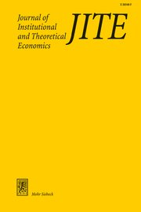

Journal article2021Measuring performance
Peer Effects under Different Relative Performance Feedback and Grouping Procedures

Journal of Institutional and Theoretical Economics 177(2), 178–204In short
A lab experiment on peer groups and feedback: who gains from comparing with the best, and who from comparing with the average?
What we find
- Men perform better when they compare themselves with the best peer; women perform better when they compare with the average.
- Men gain from randomly formed groups, women from groups formed by ability.
- Both patterns follow from different, nonlinear reactions to the reference point.
Cite
Kathrin Thiemann and Niklas Wallmeier (2021). “Peer Effects under Different Relative Performance Feedback and Grouping Procedures.” Journal of Institutional and Theoretical Economics 177(2), 178–204. https://doi.org/10.1628/jite-2021-0008
@article{thiemann2021peer,
author = {Thiemann, Kathrin and Wallmeier, Niklas},
title = {{Peer Effects under Different Relative Performance Feedback and Grouping Procedures}},
year = {2021},
journal = {Journal of Institutional and Theoretical Economics},
volume = {177},
number = {2},
pages = {178--204},
doi = {10.1628/jite-2021-0008}
}